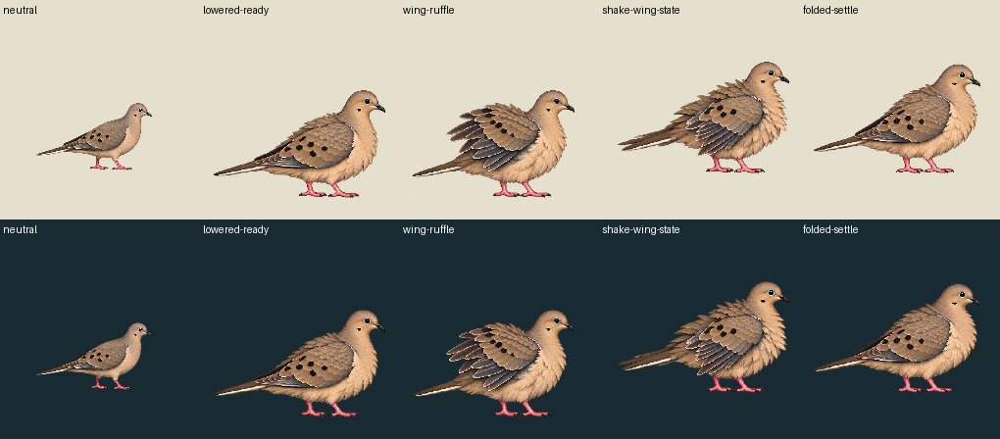

One native request produced four genuine body/wing source drawings; exact old neutral supplies entry/exit. The returned individual is visibly larger and top/bottom rows have different foot registration. These failures remain uncorrected: no per-pose fitting, translation, body snap or painted feet. Matched bathing cohort is held pending independent review; no complete bathing slot or runtime admission is claimed.
12 neutral /18 lowered ready /12 wing ruffle /12 shake wing state /24 folded settle /12 exact neutral, at30Hz. This is a3second source clock, not measured biology, wet-contact events or complete repeated shake/flutter motion. Fullstage192CSS and original world scale are unchanged; bird is never fitted to the96-unit bowl.
| Raw source RGBA | Existing63-color palette / alpha128 derivative | |
|---|---|---|
| Light | ||
| Dark |
Root105,150 is an image origin; inherited probe pixels may now hit belly/background. Contacts[] and support:null provide no physical approval. No bowl/water/drop/shadow is baked. Verified engine mapping uses actor root near slot, not a fluidline: body/feet/immersion/rim occlusion are unreviewed. Current actor paints above bowl/water, with no front mask; engine ripples/splashes are separate zero-mass cosmetics.
Verified producer-safe bath mapping · Raw transparent APNG · Palette derivative APNG · Uncorrected scale and stance measurements · Exact native cells and source identities

Palette derivative, same scale: